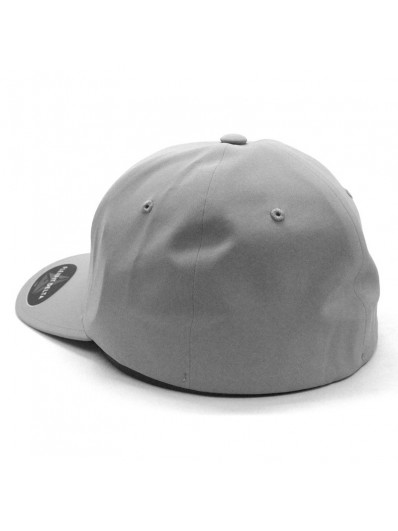

LA GORRA
Las gorras te protegen el rostro de los rayos solares, más aún cuando se trata de personas con piel sensible, que rápidamente se enrojecen en el primer contacto con el sol. Aunque no seas piel sensible, es recomendable usar gorras para que tus ojos no sean lastimados con la claridad de la luz.
Tipos de Gorra
Gorras strapback
Gorras strapback:tienen una cinta ajustable hecha de tela o cuero.
Gorra cerrada
Gorras cerradas: no tienen ningún cierre o cinta ajustable en la parte trasera; están cerradas y por ello necesitas conocer la medida justa para tu cabeza.
Gorra snapback
Gorras snapback:tienen un broche plástico ajustable en la parte trasera, para que las acomodes a tu gusto.